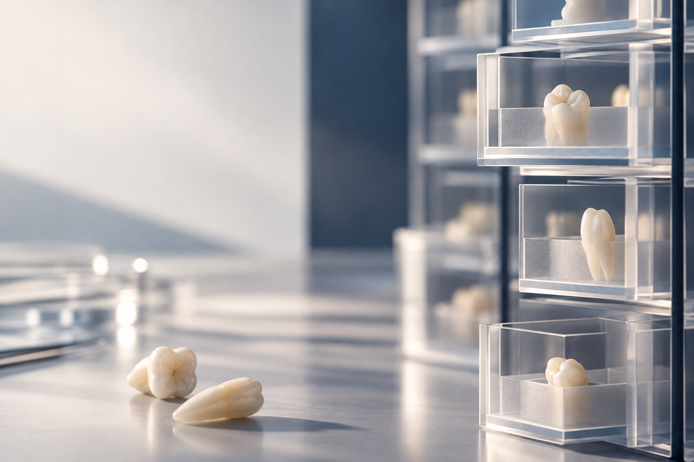

NUCOHS Tooth Tissue Bank Opens in Singapore
The first tooth bank in Singapore keeps a ready supply of donated extracted teeth for researchers.

The Faculty of Dentistry, National University of Singapore (NUS), in collaboration with the National University Centre for Oral Health, Singapore (NUCOHS), has set up the first tooth bank in Singapore, the NUCOHS Tooth Tissue Bank (NTTB). This is an enterprise that will facilitate research initiatives in an integrated academic health system.
“Imagine that you’re going to start on research and you need a hundred samples. You need to go to the clinics, find a hundred patients who will undergo extractions and invite them to give you their teeth. At the end of the day, we would have gone through a laborious and time-consuming process just to get the project started,” explained A/P Vinicius Rosa, Vice Dean (Research).
The NTTB works to remove this process entirely by keeping a ready supply of donated extracted teeth before researchers even begin on their projects. Managed by the Faculty’s Clinical Research Unit (CRU), its clinical research coordinators actively approach NUCOHS patients scheduled for extractions to donate their extracted teeth to the bank. Standard tooth extractions would have the teeth discarded and incinerated as biomedical waste. This initiative offers an alternative to utilising the extracted teeth instead of discarding them, thus minimising biomedical waste and ensuring that every type of tooth is readily available for research. All tooth donations are voluntary, and donors’ privacy is ensured.
Future of Biological Material Collection
With the success of the NTTB, A/P Rosa hopes to expand and collect other types of biological materials such as stem cells and biofilm in the future. In fact, the team is currently working to set up a stem cell bank, slated for operationalisation next year.
“There is a lot of potential for us if biological materials are readily available when we start the research,” said A/P Rosa. “It allows people to aim for higher, more complex research that ultimately will benefit our patients and oral health globally.”